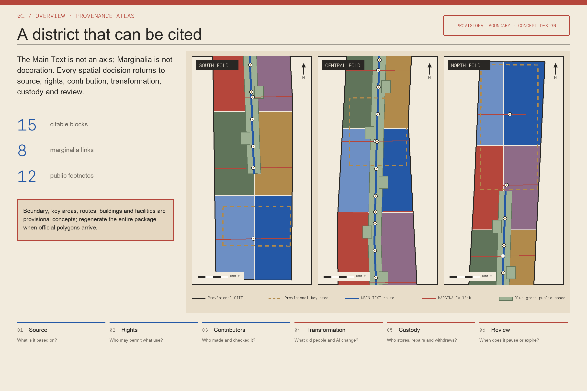
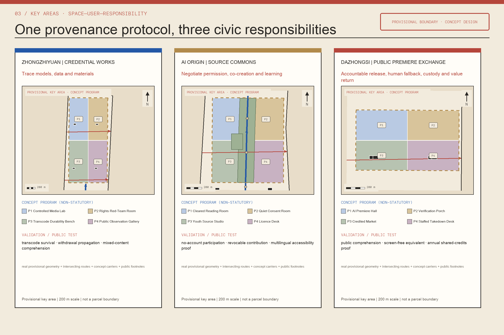
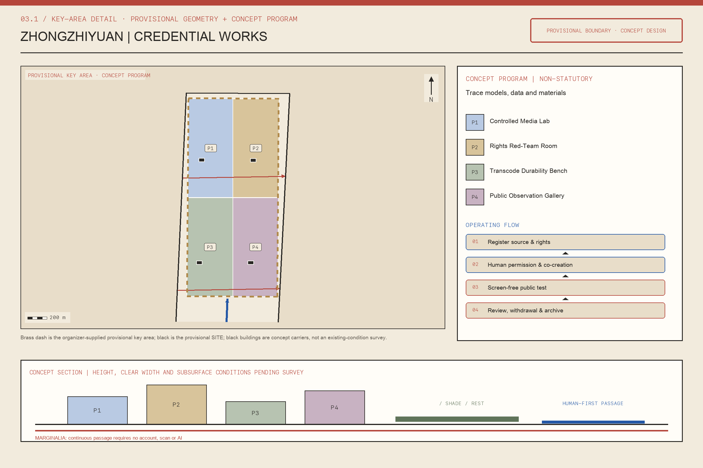
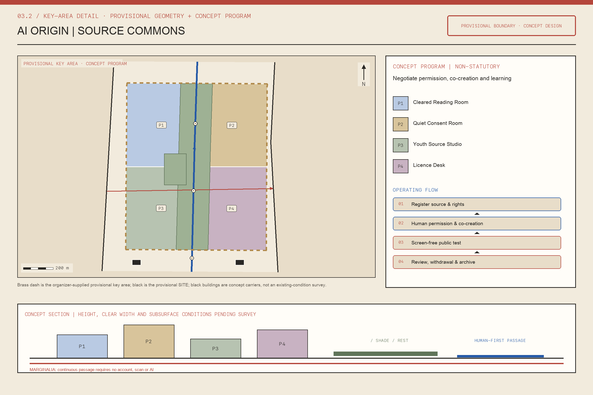
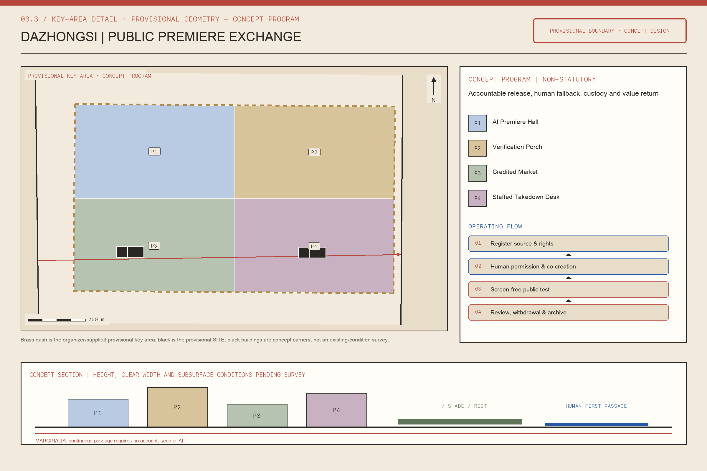
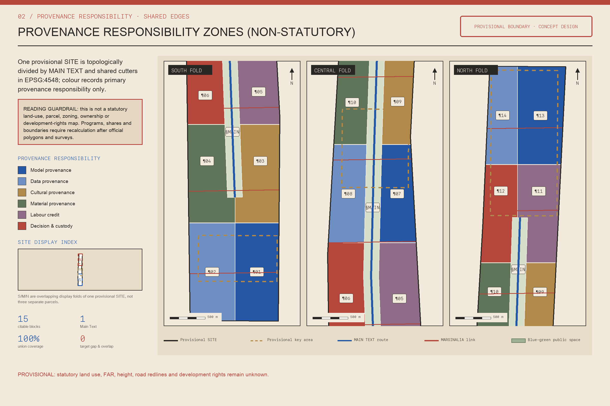
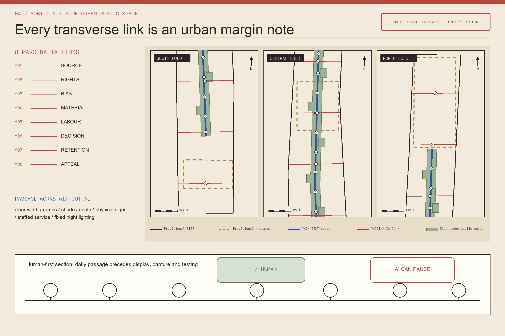
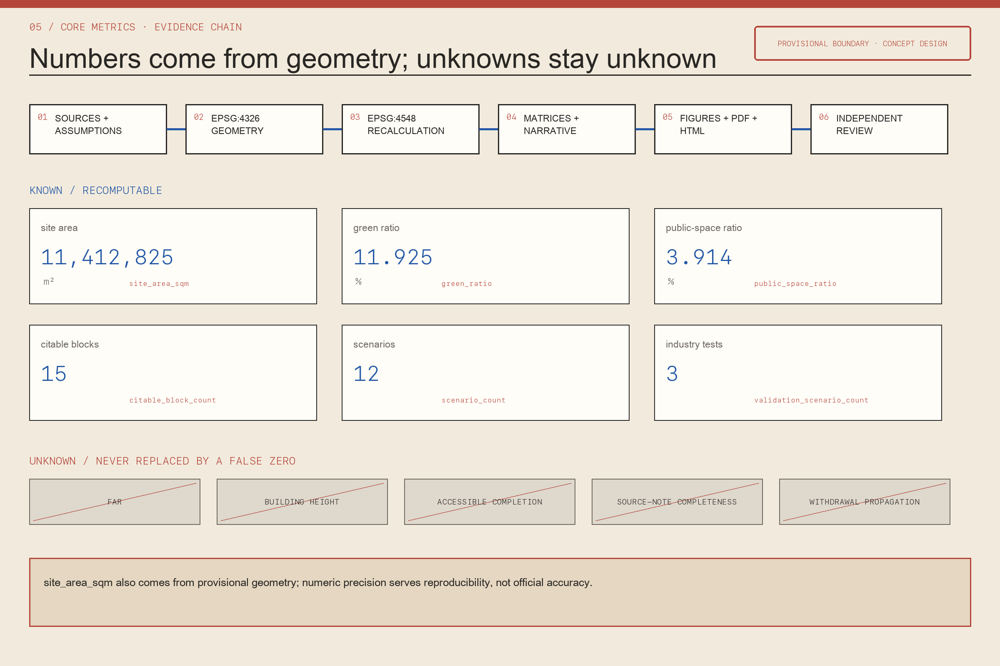

Zhongzhiyuan | Credential Works
Trace models, data and materials
controlled lab / rights red-team / transcode bench / observation gallery
Make the district as citable as a good paper
The district operates as a public text that can be cited, challenged, revised and handed over. Main Text is the continuous public reading ground; Marginalia are transverse walking and service links; Footnotes offer help without requiring a scan.

| Level | Design question | Provenance deliverable |
|---|---|---|
| 43.6 km² research | How six urban element classes become traceable | standards, cases, industry and service network |
| approx. 11.4 km² design | How spatial decisions become citable | MAIN TEXT + 8 MARGINALIA + 15 BLOCKS |
| Three key areas | How the protocol becomes usable space | Credential Works / Source Commons / Public Premiere |
Trace models, data and materials
controlled lab / rights red-team / transcode bench / observation gallery
Negotiate permission, co-creation and learning
cleared reading room / quiet consent room / youth studio / licence desk
Accountable release, fallback, maintenance and public return
premiere hall / verification porch / credited market / staffed takedown




This map records only primary provenance responsibility and shared boundaries for fifteen paragraphs. It is not statutory land use, parcels, zoning, ownership or development rights.

| 01 | Source | What is it based on? |
| 02 | Rights | Who may permit what use? |
| 03 | Contributors | Who made and checked it? |
| 04 | Transformation | What did people and AI change? |
| 05 | Custody | Who stores, repairs and withdraws? |
| 06 | Review | When does it pause or expire? |
Eight Marginalia links coordinate walking, cycling, accessibility, shade, rainwater, loading and staffed service. No AI installation may occupy accessible clear width.

Eighteen footprints are lightweight concept carriers, not an existing-building inventory, approved construction or demolition decision. Survey first, adapt second, discuss new build last.
| ID | Project | Phase | Dependency |
|---|---|---|---|
| PRJ-01 | First Frame landmark | P1 | heritage and location review |
| PRJ-02 | Eight accessible marginalia links | P2 | rights-of-way, traffic, trees and utilities |
| PRJ-03 | Credential Works | P2 | building, fire, security and operator confirmation |
| PRJ-04 | Source Commons | P1 | voluntary contribution and safeguarding protocol |
| PRJ-05 | Public Premiere Exchange | P2 | station, crowd, noise, commercial and fire review |
| PRJ-06 | Twelve footnote service nodes | P1 | accessible siting and no-scan fallback |
| PRJ-07 | City Proof Desk and Withdrawal Key | P1 | rights steward and response service |
| PRJ-08 | Source labels for fifteen citable blocks | P3 | official planning, land and building conditions |
| PRJ-09 | Annual Shared Credits proof | P1 | opt-in attribution, correction and expiry protocol |
| ID | Scenario | Place | Type | Human fallback | Stop condition |
|---|---|---|---|---|---|
| SC-01 | Attributed Jing-Zhang guide | PUBLIC-NOTE-03 / PUBLIC-NOTE-08 | public service | paper route and staffed explanation | uncited historical claim, unresolved rights claim, or inaccessible route |
| SC-02 | Enterprise provenance copilot | PROV-KEY-001 / CITE-BLOCK-13 | enterprise service | IP and compliance service desk | copilot gives legal conclusion or source inventory is incomplete |
| SC-03 | Public-safety media review | PUBLIC-NOTE-02 / PUBLIC-NOTE-11 | public service | staffed briefing and printed status notice | personal identification, sensational display, or no accountable reviewer |
| SC-04 | Credential survival after transcoding | PROV-KEY-001 / Credential Works | industry validation | visible source card stored beside each test asset | test touches uncleared media or survival result cannot be reproduced |
| SC-05 | Withdrawal propagation test | PROV-KEY-001 / PUBLIC-NOTE-11 | industry validation | manual takedown register and staffed confirmation | any derivative cannot be located, paused or replaced |
| SC-06 | Fact-restoration-synthesis comprehension test | PROV-KEY-001 / PUBLIC-NOTE-07 | industry validation | curator-led comparison and tactile/large-print key | participants cannot distinguish states or translation changes meaning |
| SC-07 | Consented oral-history transcription | PROV-KEY-002 / Source Commons | co creation | handwritten contribution or no-record conversation | unclear consent, sensitive third-party story, or refused correction |
| SC-08 | Youth source-literacy studio | PROV-KEY-002 / PUBLIC-NOTE-09 | learning | mentor-led paper storyboard and citation game | mandatory account, minor profiling, or unclear guardian protocol |
| SC-09 | Multilingual caption and accessibility proofing | PUBLIC-NOTE-08 / Public Premiere Exchange | public service | live interpreter and printed bilingual synopsis | meaning drift, missing speaker identity, or unreadable presentation |
| SC-10 | Credited creator market | PROV-KEY-003 / Public Premiere Exchange | enterprise service | printed label and staffed dispute desk | unlicensed work, hidden AI role, or inaccessible circulation |
| SC-11 | Material and component source desk | CITE-BLOCK-04 / CITE-BLOCK-10 | urban design | engraved durable label and paper maintenance log | unknown fire/safety status, no maintenance owner, or false reuse claim |
| SC-12 | Annual shared-credits proof | PROV-KEY-003 / PUBLIC-NOTE-12 | operations | publicly posted paper proof and staffed correction week | ranking people, involuntary naming, unresolved dispute, or stale record |
| P-01 | Neighbour and oral-history contributor | walk-through consent and withdrawal drill | walk-through consent and withdrawal drill |
| P-02 | Young and university learner | source-literacy comprehension test with guardians where required | source-literacy comprehension test with guardians where required |
| P-03 | Independent creator and small enterprise | asset-to-display source-note completion audit | asset-to-display source-note completion audit |
| P-04 | Researcher and curator | mixed-media provenance and correction review | mixed-media provenance and correction review |
| P-05 | Disabled visitor and carer | paired accessibility and non-digital-equivalence audit | paired accessibility and non-digital-equivalence audit |
| P-06 | Editor, maintainer and accountable public operator | offline fallback, takedown and restoration rehearsal | offline fallback, takedown and restoration rehearsal |
site_area_sqmgreen_ratiopublic_space_ratiocitable_block_countmarginalia_link_countfootnote_node_countscenario_countvalidation_scenario_count
FAR, building height, accessible completion, source-note completeness and withdrawal propagation remain unknown; no false zero is displayed.
Matrices connect 23 announcement/agent tasks, five mandatory standards and fifteen design-depth items to sections, layers, metrics, drawings, sources, assumptions and checks.
Local gates cover deterministic validation, spatial review, static visual review, professional evidence, bilingual pairing, page-by-page PDF rendering and symlink checks.
| ID | Title | Use |
|---|---|---|
| SITE-PACKAGE | Centennial Jing-Zhang AI Belt site package | Project scope, allowed design space, enums, planning limits and schemas. |
| SOURCE-REGISTRY | Repository source registry | Controls formal-ready, background-only and provisional-only uses. |
| PROCESSED-FACT-PACK | Agent fact-pack navigation layer | Navigation for scopes, tasks and missing-data checks. |
| BOUNDARY-SOURCE | Organizer-supplied provisional boundaries | Temporary constraint for geometry generation and recalculation. |
| KEY-AREA-SOURCE | Organizer-supplied provisional key-area polygons | Temporary location of the three mandatory detailed-design areas. |
| OFFICIAL-ANNOUNCEMENT | 百年京张AI创新带城市设计国际方案征集资格预审公告 | Official project scope, objectives, required tasks and design-depth context. |
| AGENT-TASKBOOK | Urban-design AI open-call taskbook | Six agent tasks, identity, cases, scenarios, personas, landmarks, culture and operations. |
| C2PA-SPEC-2.4 | C2PA Content Credentials Technical Specification 2.4 | Mechanism reference for opt-in media provenance and transformation history. |
| CAC-AI-LABELS-2025 | 人工智能生成合成内容标识办法发布说明 | Primary reference for explicit and implicit labels on AI-generated or synthetic content. |
| GENAI-MEASURES-2023 | 生成式人工智能服务管理暂行办法 | Regulatory context for public-facing generative-AI services and legitimate rights. |
| HELSINKI-AI-REGISTER | City of Helsinki AI Register | Case mechanism for readable public descriptions and feedback on city AI systems. |
| DUTCH-ALGORITHM-REGISTER | Algorithm Register of the Dutch government | Case mechanism for common, publicly readable algorithm records. |
| EUROCITIES-ALGORITHM-TRANSPARENCY | Algorithmic Transparency Standard | Case mechanism for interoperable, open, city-level algorithm descriptions. |
| EUROPEANA-RIGHTS | Europeana Rights Statements FAQ | Case mechanism for communicating copyright status and reuse conditions of digital heritage objects. |
| MOZILLA-COMMON-VOICE | Mozilla Common Voice Legal Terms | Case mechanism for contributor assurances, dataset licensing and safeguards around voice contribution. |
| UNESCO-AI-ETHICS | Recommendation on the Ethics of Artificial Intelligence | Case reference for traceability, cultural diversity, public literacy, accessibility and participation. |
| ID | Gap | Impact |
|---|---|---|
| A-BOUNDARY-001 | The overall and three key-area polygons are provisional constraints supplied by the repository, not official planning boundaries. | All design cells, area metrics, figures, HTML and PDFs are temporary concept outputs and must be regenerated when official polygons arrive. |
| A-CONTROLS-001 | Approved FAR, height, density, setback, road-redline and parcel controls are absent. | No statutory development intensity or final building scale is claimed. |
| A-HERITAGE-001 | Precise heritage inventory, protection zones, archaeological conditions and approved interpretation material are absent. | The Main Text is a concept public framework, not the railway, a heritage boundary or a construction line. |
| A-BUILDINGS-001 | Current building footprints, structure, ownership, vacancy, fire conditions and embodied-carbon baselines are absent. | Building polygons are lightweight concept carriers only; retain/renovate/demolish decisions remain unknown. |
| A-MOBILITY-001 | Traffic flows, station interfaces, road rights-of-way, crossings, accessible-route continuity and parking demand are absent. | The eight Marginalia links express required relationships, not approved streets or bridges. |
| A-MUNICIPAL-001 | Utilities, drainage, flood, energy, communications, fire and emergency capacities are absent. | No capacity, resilience or infrastructure-sizing claim is made. |
| A-RIGHTS-001 | No local asset, oral-history, model, dataset, image, voice or consent inventory has been collected for this concept package. | Scenarios use synthetic or cleared test material only; no resident contribution is presumed available. |
| A-OPERATIONS-001 | Operators, budgets, revenue-sharing, compensation, service levels and long-term custodians are not appointed. | The operating calendar and responsibility roles are design hypotheses, not government or partner commitments. |
| A-TECHNICAL-PROVENANCE-001 | Content-credential persistence, withdrawal propagation and multilingual comprehension have not been tested on site. | The three industry tests are research protocols; no performance result is claimed. |